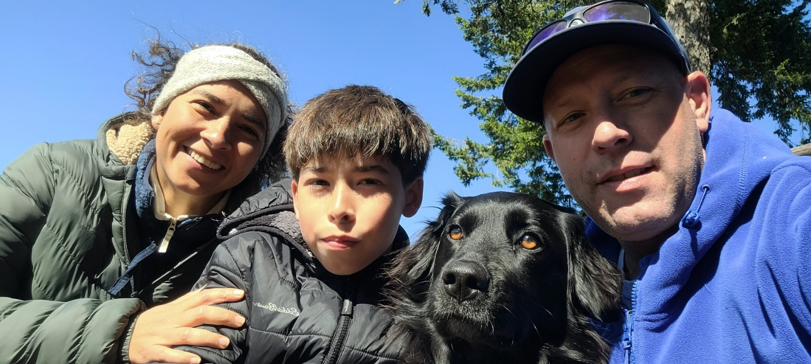
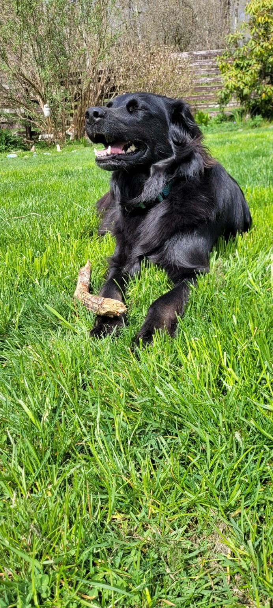
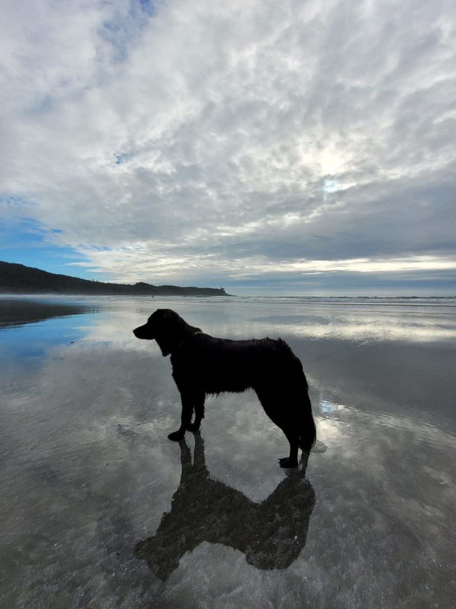

Mike & Lorena
Home dog sitting & boarding


Mike & Lorena offer dog sitting and boarding in their home. They have a friendly 5-year-old female Lab mix named Leia who is great with other dogs. Their home has a good-sized yard backing onto greenspace, and dogs in their care get multiple walks throughout the day.
Care StyleHome-based dog sitting and boarding
Phone604-307-8472
Home DogLeia, a friendly 5-year-old female Lab mix
SettingGood-sized yard backing onto greenspace
AvailabilityDaily dog sitting or extended boarding
Dog Sitting
Dog Boarding
Daily Care
Extended Boarding
Home-Based Care